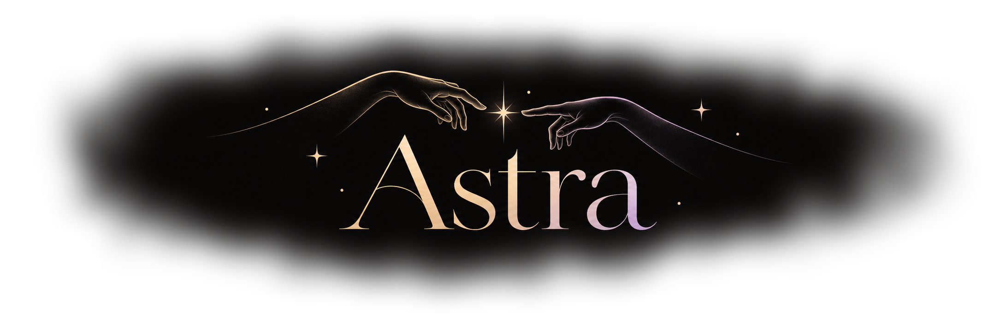

How this little universe works
Stars are arranged into soft color regions, with nearby stars influenced by shared Vibe and finish. Threads indicate similarity; this is a visual metaphor, not measured spectral data.

Select a star to fly closer · Drag to drift · Scroll to zoom